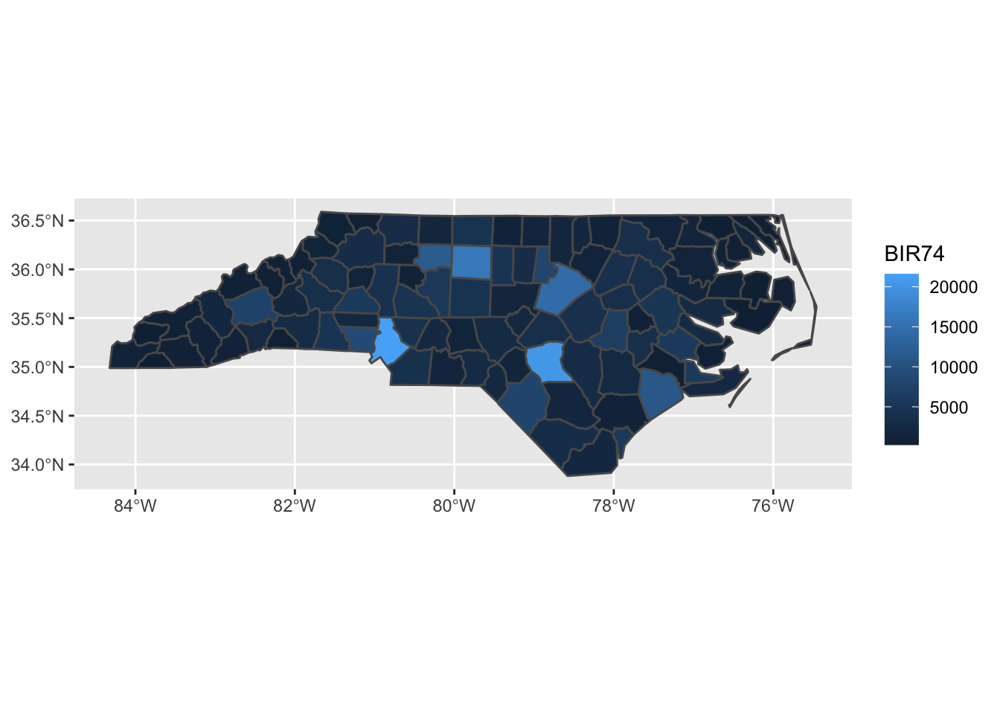
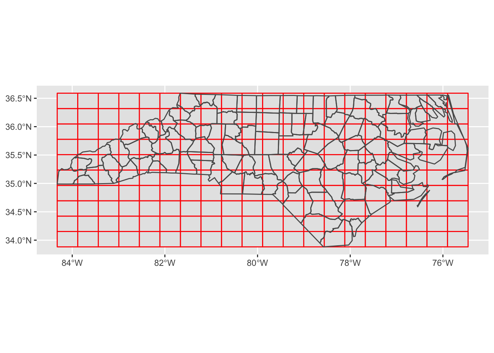
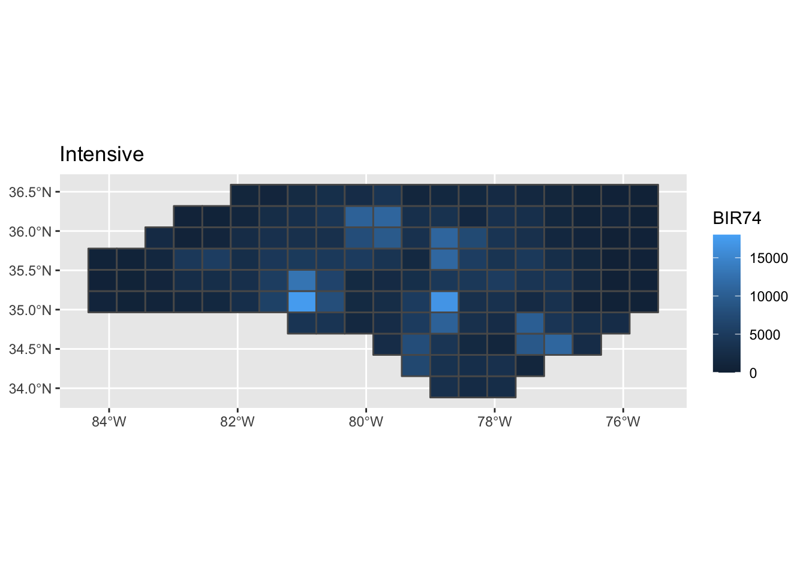

Thursday September 8, 2022
“Hell isn’t other people’s code. Hell is your own code from 3 years ago.” – Jeff Atwood
Today
- Spatial data subsets and joins
- Interpolating variables using areal weights
- S4 spatial data frames
Spatial data subsets and joins
Variables (stored as columns) in spatial data structures are referred to as ‘attributes’.
With simple feature data frames you can create data subsets using [, subset() and $ from the {base} R packages and select() and filter() from the {dplyr} package.
The [ operator subsets rows and columns. Indexes specify the elements you wish to extract from an object, e.g. object[i, j], with i and j typically being numbers representing rows and columns. Leaving i or j empty returns all rows or columns, so world[1:5, ] returns the first five rows and all columns of the simple feature data frame world (from the {spData} package). Examples
world <- spData::world
world[c(1, 5, 9), ] # subset rows by row position## Simple feature collection with 3 features and 10 fields
## Geometry type: MULTIPOLYGON
## Dimension: XY
## Bounding box: xmin: -180 ymin: -18.28799 xmax: 180 ymax: 71.35776
## Geodetic CRS: WGS 84
## # A tibble: 3 × 11
## iso_a2 name_long continent region_un subregion type area_km2 pop lifeExp
## <chr> <chr> <chr> <chr> <chr> <chr> <dbl> <dbl> <dbl>
## 1 FJ Fiji Oceania Oceania Melanesia Sove… 19290. 8.86e5 70.0
## 2 US United Sta… North Am… Americas Northern… Coun… 9510744. 3.19e8 78.8
## 3 ID Indonesia Asia Asia South-Ea… Sove… 1819251. 2.55e8 68.9
## # … with 2 more variables: gdpPercap <dbl>, geom <MULTIPOLYGON [°]>world[, 1:3] # subset columns by column position## Simple feature collection with 177 features and 3 fields
## Geometry type: MULTIPOLYGON
## Dimension: XY
## Bounding box: xmin: -180 ymin: -89.9 xmax: 180 ymax: 83.64513
## Geodetic CRS: WGS 84
## # A tibble: 177 × 4
## iso_a2 name_long continent geom
## <chr> <chr> <chr> <MULTIPOLYGON [°]>
## 1 FJ Fiji Oceania (((-180 -16.55522, -179.9174 -16.50178…
## 2 TZ Tanzania Africa (((33.90371 -0.95, 31.86617 -1.02736, …
## 3 EH Western Sahara Africa (((-8.66559 27.65643, -8.817828 27.656…
## 4 CA Canada North America (((-132.71 54.04001, -133.18 54.16998,…
## 5 US United States North America (((-171.7317 63.78252, -171.7911 63.40…
## 6 KZ Kazakhstan Asia (((87.35997 49.21498, 86.82936 49.8266…
## 7 UZ Uzbekistan Asia (((55.96819 41.30864, 57.09639 41.3223…
## 8 PG Papua New Guinea Oceania (((141.0002 -2.600151, 141.0171 -5.859…
## 9 ID Indonesia Asia (((104.37 -1.084843, 104.0108 -1.05921…
## 10 AR Argentina South America (((-68.63401 -52.63637, -68.63335 -54.…
## # … with 167 more rowsworld[, c("name_long", "lifeExp")] # subset columns by name## Simple feature collection with 177 features and 2 fields
## Geometry type: MULTIPOLYGON
## Dimension: XY
## Bounding box: xmin: -180 ymin: -89.9 xmax: 180 ymax: 83.64513
## Geodetic CRS: WGS 84
## # A tibble: 177 × 3
## name_long lifeExp geom
## <chr> <dbl> <MULTIPOLYGON [°]>
## 1 Fiji 70.0 (((-180 -16.55522, -179.9174 -16.50178, -179.7933 -…
## 2 Tanzania 64.2 (((33.90371 -0.95, 31.86617 -1.02736, 30.76986 -1.0…
## 3 Western Sahara NA (((-8.66559 27.65643, -8.817828 27.65643, -8.794884…
## 4 Canada 82.0 (((-132.71 54.04001, -133.18 54.16998, -133.2397 53…
## 5 United States 78.8 (((-171.7317 63.78252, -171.7911 63.40585, -171.553…
## 6 Kazakhstan 71.6 (((87.35997 49.21498, 86.82936 49.82667, 85.54127 4…
## 7 Uzbekistan 71.0 (((55.96819 41.30864, 57.09639 41.32231, 56.93222 4…
## 8 Papua New Guinea 65.2 (((141.0002 -2.600151, 141.0171 -5.859022, 141.0339…
## 9 Indonesia 68.9 (((104.37 -1.084843, 104.0108 -1.059212, 103.4376 -…
## 10 Argentina 76.3 (((-68.63401 -52.63637, -68.63335 -54.8695, -67.562…
## # … with 167 more rowsHere you use logical vectors to create a subset. First create a logical vector sel_area.
sel_area <- world$area_km2 < 10000
head(sel_area)## [1] FALSE FALSE FALSE FALSE FALSE FALSEsummary(sel_area)## Mode FALSE TRUE
## logical 170 7Then select only cases from the world simple feature data frame where the elements of the sel_area vector are TRUE.
small_countries <- world[sel_area, ]This creates a new simple feature data frame, small_countries, containing nations whose surface area is smaller than 10,000 square kilometers.
Note: there is no harm in keeping the geometry column because an operation on a {sf} object only changes the geometry when appropriate (e.g. by dissolving borders between adjacent polygons following aggregation). This means that the speed of operations with attribute data in {sf} objects is the same as with columns in a data frames.
The {base} R function subset() provides another way to get the same result.
small_countries <- subset(world,
area_km2 < 10000)The {dplyr} verbs work on {sf} spatial data frames. The functions include dplyr::select() and dplyr::filter().
CAUTION! The {dplyr} and {raster} packages have a select() function. When using both packages in the same session, the function in the most recently attached package will be used, ‘masking’ the other function. This will generate error messages containing text like: unable to find an inherited method for function ‘select’ for signature “sf”. To avoid this error message, and prevent ambiguity, you should always use the long-form function name, prefixed by the package name and two colons dplyr::select().
The dplyr::select() function picks the columns by name or position. For example, we can select only two columns, name_long and pop, with the following command.
world1 <- world |>
dplyr::select(name_long, pop)
names(world1)## [1] "name_long" "pop" "geom"The result is a simple feature data frame with the geometry column.
With the select() function you can subset and rename columns at the same time. Here you select the columns with names name_long and pop and give the pop column a new name (population).
world |>
dplyr::select(name_long,
population = pop)## Simple feature collection with 177 features and 2 fields
## Geometry type: MULTIPOLYGON
## Dimension: XY
## Bounding box: xmin: -180 ymin: -89.9 xmax: 180 ymax: 83.64513
## Geodetic CRS: WGS 84
## # A tibble: 177 × 3
## name_long population geom
## <chr> <dbl> <MULTIPOLYGON [°]>
## 1 Fiji 885806 (((-180 -16.55522, -179.9174 -16.50178, -179.793…
## 2 Tanzania 52234869 (((33.90371 -0.95, 31.86617 -1.02736, 30.76986 -…
## 3 Western Sahara NA (((-8.66559 27.65643, -8.817828 27.65643, -8.794…
## 4 Canada 35535348 (((-132.71 54.04001, -133.18 54.16998, -133.2397…
## 5 United States 318622525 (((-171.7317 63.78252, -171.7911 63.40585, -171.…
## 6 Kazakhstan 17288285 (((87.35997 49.21498, 86.82936 49.82667, 85.5412…
## 7 Uzbekistan 30757700 (((55.96819 41.30864, 57.09639 41.32231, 56.9322…
## 8 Papua New Guinea 7755785 (((141.0002 -2.600151, 141.0171 -5.859022, 141.0…
## 9 Indonesia 255131116 (((104.37 -1.084843, 104.0108 -1.059212, 103.437…
## 10 Argentina 42981515 (((-68.63401 -52.63637, -68.63335 -54.8695, -67.…
## # … with 167 more rowsThe dplyr::pull() function returns a single vector without the geometry.
world |>
dplyr::pull(pop)## [1] 885806 52234869 NA 35535348 318622525 17288285
## [7] 30757700 7755785 255131116 42981515 17613798 73722860
## [13] 13513125 46024250 37737913 13569438 10572466 10405844
## [19] 143819666 382169 NA NA 56295 NA
## [25] 1212814 54539571 2145785 124221600 3419546 204213133
## [31] 10562159 30973354 47791911 3903986 4757575 6013997
## [37] 8809216 6281189 15923559 351694 30738378 763393
## [43] 547928 NA 15903112 3534874 2862087 11439767
## [49] 15411675 2168573 2370992 14546111 16962846 4063920
## [55] 10286712 19148219 176460502 22239904 7228915 26962563
## [61] 22531350 11805509 1725744 4390737 7079162 17585977
## [67] 4515392 4871101 1875713 1129424 15620974 17068838
## [73] 27212382 1295097 26920466 9891790 8215700 5603279
## [79] 23589801 4294682 1917852 11143908 39113313 8809306
## [85] 9070867 2374419 3782450 35006080 3960925 258850
## [91] 15270790 68416772 6576397 51924182 92544915 25116363
## [97] 50746659 2923896 1293859294 159405279 776448 28323241
## [103] 185546257 32758020 8362745 5835500 5466241 78411092
## [109] 19203090 2906220 9696110 9474511 45271947 38011735
## [115] 8546356 9866468 3556397 19908979 2932367 1993782
## [121] 1314545 80982500 7223938 10892413 77030628 2889104
## [127] 4238389 8188649 556319 11209057 16865008 10401062
## [133] 46480882 4657740 268050 575504 4509700 23504138
## [139] 20771000 1364270000 NA 60789140 5643475 64613160
## [145] 327386 9535079 3727000 100102249 30228017 411704
## [151] 2061980 5461512 5418649 10525347 NA 127276000
## [157] 6552584 26246327 30776722 NA NA 1152309
## [163] 34318082 91812566 6204108 97366774 912164 NA
## [169] 38833338 11345357 3566002 2077495 7130576 621810
## [175] 1821800 1354493 11530971The filter() function keeps only rows matching given criteria, e.g., only countries with a very high average life expectancy.
world |>
dplyr::filter(lifeExp > 82)## Simple feature collection with 9 features and 10 fields
## Geometry type: MULTIPOLYGON
## Dimension: XY
## Bounding box: xmin: -24.32618 ymin: -43.6346 xmax: 153.5695 ymax: 69.10625
## Geodetic CRS: WGS 84
## # A tibble: 9 × 11
## iso_a2 name_long continent region_un subregion type area_km2 pop lifeExp
## * <chr> <chr> <chr> <chr> <chr> <chr> <dbl> <dbl> <dbl>
## 1 IL Israel Asia Asia Western … Coun… 22991. 8.22e6 82.2
## 2 SE Sweden Europe Europe Northern… Sove… 450582. 9.70e6 82.3
## 3 CH Switzerland Europe Europe Western … Sove… 46185. 8.19e6 83.2
## 4 LU Luxembourg Europe Europe Western … Sove… 2417. 5.56e5 82.2
## 5 ES Spain Europe Europe Southern… Sove… 502306. 4.65e7 83.2
## 6 AU Australia Oceania Oceania Australi… Coun… 7687614. 2.35e7 82.3
## 7 IT Italy Europe Europe Southern… Sove… 315105. 6.08e7 83.1
## 8 IS Iceland Europe Europe Northern… Sove… 107736. 3.27e5 82.9
## 9 JP Japan Asia Asia Eastern … Sove… 404620. 1.27e8 83.6
## # … with 2 more variables: gdpPercap <dbl>, geom <MULTIPOLYGON [°]>Aggregation summarizes a data frame by a grouping variable. An example of aggregation is to calculate the number of people per continent based on country-level data (one row per country).
This is done with the dplyr::group_by() and dplyr::summarize() functions.
world |>
dplyr::group_by(continent) |>
dplyr::summarize(Population = sum(pop, na.rm = TRUE),
nCountries = dplyr::n())## Simple feature collection with 8 features and 3 fields
## Geometry type: GEOMETRY
## Dimension: XY
## Bounding box: xmin: -180 ymin: -89.9 xmax: 180 ymax: 83.64513
## Geodetic CRS: WGS 84
## # A tibble: 8 × 4
## continent Population nCountries geom
## <chr> <dbl> <int> <GEOMETRY [°]>
## 1 Africa 1154946633 51 MULTIPOLYGON (((43.1453 11.4620…
## 2 Antarctica 0 1 MULTIPOLYGON (((-180 -89.9, 180…
## 3 Asia 4311408059 47 MULTIPOLYGON (((104.37 -1.08484…
## 4 Europe 669036256 39 MULTIPOLYGON (((-180 64.97971, …
## 5 North America 565028684 18 MULTIPOLYGON (((-132.71 54.0400…
## 6 Oceania 37757833 7 MULTIPOLYGON (((-180 -16.55522,…
## 7 Seven seas (open ocean) 0 1 POLYGON ((68.935 -48.625, 68.86…
## 8 South America 412060811 13 MULTIPOLYGON (((-66.95992 -54.8…The two columns in the resulting table are Population and nCountries. The functions sum() and dplyr::n() were the aggregating functions.
The result is a simple feature data frame with a single row representing attributes of the world and the geometry as a single multi-polygon through the geometric union operator.
You can chain together functions to find the world’s three most populous continents and the number of countries they contain.
world |>
dplyr::select(pop, continent) |>
dplyr::group_by(continent) |>
dplyr::summarize(Population = sum(pop, na.rm = TRUE),
nCountries = dplyr::n()) |>
dplyr::top_n(n = 3, wt = Population) ## Simple feature collection with 3 features and 3 fields
## Geometry type: MULTIPOLYGON
## Dimension: XY
## Bounding box: xmin: -180 ymin: -34.81917 xmax: 180 ymax: 81.2504
## Geodetic CRS: WGS 84
## # A tibble: 3 × 4
## continent Population nCountries geom
## * <chr> <dbl> <int> <MULTIPOLYGON [°]>
## 1 Africa 1154946633 51 (((43.1453 11.46204, 42.71587 11.73564, 43.28…
## 2 Asia 4311408059 47 (((104.37 -1.084843, 104.0108 -1.059212, 103.…
## 3 Europe 669036256 39 (((-180 64.97971, -179.4327 65.40411, -179.88…If you want to create a new column based on existing columns use dplyr::mutate(). For example, if you want to calculate population density for each country divide the population column, here pop, by an area column, here area_km2 with unit area in square kilometers.
world |>
dplyr::mutate(Population_Density = pop / area_km2)## Simple feature collection with 177 features and 11 fields
## Geometry type: MULTIPOLYGON
## Dimension: XY
## Bounding box: xmin: -180 ymin: -89.9 xmax: 180 ymax: 83.64513
## Geodetic CRS: WGS 84
## # A tibble: 177 × 12
## iso_a2 name_long continent region_un subregion type area_km2 pop lifeExp
## * <chr> <chr> <chr> <chr> <chr> <chr> <dbl> <dbl> <dbl>
## 1 FJ Fiji Oceania Oceania Melanesia Sove… 1.93e4 8.86e5 70.0
## 2 TZ Tanzania Africa Africa Eastern … Sove… 9.33e5 5.22e7 64.2
## 3 EH Western … Africa Africa Northern… Inde… 9.63e4 NA NA
## 4 CA Canada North Am… Americas Northern… Sove… 1.00e7 3.55e7 82.0
## 5 US United S… North Am… Americas Northern… Coun… 9.51e6 3.19e8 78.8
## 6 KZ Kazakhst… Asia Asia Central … Sove… 2.73e6 1.73e7 71.6
## 7 UZ Uzbekist… Asia Asia Central … Sove… 4.61e5 3.08e7 71.0
## 8 PG Papua Ne… Oceania Oceania Melanesia Sove… 4.65e5 7.76e6 65.2
## 9 ID Indonesia Asia Asia South-Ea… Sove… 1.82e6 2.55e8 68.9
## 10 AR Argentina South Am… Americas South Am… Sove… 2.78e6 4.30e7 76.3
## # … with 167 more rows, and 3 more variables: gdpPercap <dbl>,
## # geom <MULTIPOLYGON [°]>, Population_Density <dbl>world |>
dplyr::transmute(Population_Density = pop / area_km2)## Simple feature collection with 177 features and 1 field
## Geometry type: MULTIPOLYGON
## Dimension: XY
## Bounding box: xmin: -180 ymin: -89.9 xmax: 180 ymax: 83.64513
## Geodetic CRS: WGS 84
## # A tibble: 177 × 2
## Population_Density geom
## * <dbl> <MULTIPOLYGON [°]>
## 1 45.9 (((-180 -16.55522, -179.9174 -16.50178, -179.7933 -16.020…
## 2 56.0 (((33.90371 -0.95, 31.86617 -1.02736, 30.76986 -1.01455, …
## 3 NA (((-8.66559 27.65643, -8.817828 27.65643, -8.794884 27.12…
## 4 3.54 (((-132.71 54.04001, -133.18 54.16998, -133.2397 53.85108…
## 5 33.5 (((-171.7317 63.78252, -171.7911 63.40585, -171.5531 63.3…
## 6 6.33 (((87.35997 49.21498, 86.82936 49.82667, 85.54127 49.6928…
## 7 66.7 (((55.96819 41.30864, 57.09639 41.32231, 56.93222 41.8260…
## 8 16.7 (((141.0002 -2.600151, 141.0171 -5.859022, 141.0339 -9.11…
## 9 140. (((104.37 -1.084843, 104.0108 -1.059212, 103.4376 -0.7119…
## 10 15.4 (((-68.63401 -52.63637, -68.63335 -54.8695, -67.56244 -54…
## # … with 167 more rowsThe dplyr::transmute() function performs the same computation but also removes the other columns (except the geometry column).
Subsetting (filtering) your data based on geographic boundaries
The {USAboundaries} package has historical and contemporary boundaries for the United States provided by the U.S. Census Bureau.
Individual states are extracted using the us_states() function. CAUTION: this function has the same name as the object us_states from the {spData} package.
Here you use the argument states = to get only the state of Kansas. You then make a plot of the boundary and check the native coordinate reference system (CRS).
KS.sf <- USAboundaries::us_states(states = "Kansas")
library(ggplot2)
ggplot(data = KS.sf) +
geom_sf()
sf::st_crs(KS.sf)## Coordinate Reference System:
## User input: EPSG:4326
## wkt:
## GEOGCRS["WGS 84",
## DATUM["World Geodetic System 1984",
## ELLIPSOID["WGS 84",6378137,298.257223563,
## LENGTHUNIT["metre",1]]],
## PRIMEM["Greenwich",0,
## ANGLEUNIT["degree",0.0174532925199433]],
## CS[ellipsoidal,2],
## AXIS["geodetic latitude (Lat)",north,
## ORDER[1],
## ANGLEUNIT["degree",0.0174532925199433]],
## AXIS["geodetic longitude (Lon)",east,
## ORDER[2],
## ANGLEUNIT["degree",0.0174532925199433]],
## USAGE[
## SCOPE["Horizontal component of 3D system."],
## AREA["World."],
## BBOX[-90,-180,90,180]],
## ID["EPSG",4326]]The polygon geometry includes the border and the area inside the border. The CRS is described by the 4326 EPSG code and implemented using well-known text (WKT).
You use a geometric operation to subset spatial data geographically (rather than on some attribute). For example here you subset the tornado tracks as line strings, keeping only those line strings that fall within the Kansas border defined by a polygon geometry.
First import the tornado data.
if(!"1950-2020-torn-aspath" %in% list.files(here::here("data"))) {
download.file(url = "http://www.spc.noaa.gov/gis/svrgis/zipped/1950-2020-torn-aspath.zip",
destfile = here::here("data", "1950-2020-torn-aspath.zip"))
unzip(here::here("data", "1950-2020-torn-aspath.zip"),
exdir = here::here("data"))
}
Torn.sf <- sf::st_read(dsn = here::here("data", "1950-2020-torn-aspath"),
layer = "1950-2020-torn-aspath") ## Reading layer `1950-2020-torn-aspath' from data source
## `/Users/jameselsner/Desktop/ClassNotes/ASS-2022/data/1950-2020-torn-aspath'
## using driver `ESRI Shapefile'
## Simple feature collection with 66244 features and 22 fields
## Geometry type: LINESTRING
## Dimension: XY
## Bounding box: xmin: -163.53 ymin: 17.7212 xmax: -64.7151 ymax: 61.02
## Geodetic CRS: WGS 84The geometries are line strings representing the approximate track of each tornado. The CRS has EPSG code of 4326, same as the Kansas polygon.
To keep only the tornado tracks that fall within the border of Kansas you use the sf::st_intersection() function. The first argument (x =) is the simple feature data frame that you want to subset and the second argument (y =) defines the geometry over which the subset occurs.
KS_Torn.sf <- sf::st_intersection(x = Torn.sf,
y = KS.sf)## Warning: attribute variables are assumed to be spatially constant throughout all
## geometriesYou can use the pipe operator (|>) to pass the first argument to the function.
KS_Torn.sf <- Torn.sf |>
sf::st_intersection(y = KS.sf)## Warning: attribute variables are assumed to be spatially constant throughout all
## geometriesYou make a plot to see if things appear as you expect.
ggplot() +
geom_sf(data = KS.sf) +
geom_sf(data = KS_Torn.sf)
Note that no tornado track lies outside the state border. Line strings that lie outside the border are clipped at the border. However the attribute values represent the entire track.
If you want the entire tornado track for all tornadoes that passed into (or through) the state, then you first use the geometric binary predict function sf::st_intersects(). With sparse = FALSE a matrix with a single column of TRUEs and FALSEs is returned. Here you use the piping operator to implicitly specify the x = argument as the Torn.sf data frame.
Intersects <- Torn.sf |>
sf::st_intersects(y = KS.sf, sparse = FALSE)
head(Intersects)## [,1]
## [1,] FALSE
## [2,] FALSE
## [3,] FALSE
## [4,] FALSE
## [5,] FALSE
## [6,] FALSEsum(Intersects)## [1] 4377Next you create a new data frame from the original data frame keeping only observations (rows) where Interects is TRUE.
KS_Torn2.sf <- Torn.sf[Intersects, ]
ggplot() +
geom_sf(data = KS.sf) +
geom_sf(data = KS_Torn2.sf)
Are tornadoes more common in some parts of Kansas than others? One way to answer this question is to see how far away the tornado centroid is from the center of the state.
Start by computing the centers of the state polygon and the combined set of Kansas tornadoes using the sf::st_centroid() function. Note you first use the sf::st_combine() function on the tornadoes.
geocenterKS <- KS.sf |>
sf::st_centroid()## Warning in st_centroid.sf(KS.sf): st_centroid assumes attributes are constant
## over geometries of xcenterKStornadoes <- KS_Torn.sf |>
sf::st_combine() |>
sf::st_centroid()Then make a map and compute the distance in meters using the sf::st_distance() function.
ggplot() +
geom_sf(data = KS.sf) +
geom_sf(data = geocenterKS, col = "blue") +
geom_sf(data = centerKStornadoes, col = "red")
geocenterKS |>
sf::st_distance(centerKStornadoes)## Units: [m]
## [,1]
## [1,] 2875.099Less than 3 km!
More examples: https://www.jla-data.net/eng/spatial-aggregation/
Mutating data frames with joins
Combining data from different sources based on a shared variable is a common operation. The {dplyr} package has join functions that follow naming conventions used in database languages (like SQL).
Given two data frames labeled x and y, the join functions add columns from y to x, matching rows based on the function name.
inner_join(): includes all rows inxandyleft_join(): includes all rows inxfull_join(): includes all rows inxory
Join functions work the same on data frames and on simple feature data frames. The most common type of attribute join on spatial data takes a simple feature data frame as the first argument and adds columns to it from a data a frame specified as the second argument.
For example, you combine data on coffee production with the spData::world simple feature data frame. Coffee production by country is in the data frame called spData::coffee_data.
dplyr::glimpse(spData::coffee_data)## Rows: 47
## Columns: 3
## $ name_long <chr> "Angola", "Bolivia", "Brazil", "Burundi", "Came…
## $ coffee_production_2016 <int> NA, 3, 3277, 37, 8, NA, 4, 1330, 28, 114, NA, 1…
## $ coffee_production_2017 <int> NA, 4, 2786, 38, 6, NA, 12, 1169, 32, 130, NA, …It has 3 columns: name_long names major coffee-producing nations and coffee_production_2016 and coffee_production_2017 contain estimated values for coffee production in units of 60-kg bags per year.
First select only the name and GDP (per person) from the spData::world simple feature data frame.
( world.sf <- spData::world |>
dplyr::select(name_long, gdpPercap) )## Simple feature collection with 177 features and 2 fields
## Geometry type: MULTIPOLYGON
## Dimension: XY
## Bounding box: xmin: -180 ymin: -89.9 xmax: 180 ymax: 83.64513
## Geodetic CRS: WGS 84
## # A tibble: 177 × 3
## name_long gdpPercap geom
## <chr> <dbl> <MULTIPOLYGON [°]>
## 1 Fiji 8222. (((-180 -16.55522, -179.9174 -16.50178, -179.7933…
## 2 Tanzania 2402. (((33.90371 -0.95, 31.86617 -1.02736, 30.76986 -1…
## 3 Western Sahara NA (((-8.66559 27.65643, -8.817828 27.65643, -8.7948…
## 4 Canada 43079. (((-132.71 54.04001, -133.18 54.16998, -133.2397 …
## 5 United States 51922. (((-171.7317 63.78252, -171.7911 63.40585, -171.5…
## 6 Kazakhstan 23587. (((87.35997 49.21498, 86.82936 49.82667, 85.54127…
## 7 Uzbekistan 5371. (((55.96819 41.30864, 57.09639 41.32231, 56.93222…
## 8 Papua New Guinea 3709. (((141.0002 -2.600151, 141.0171 -5.859022, 141.03…
## 9 Indonesia 10003. (((104.37 -1.084843, 104.0108 -1.059212, 103.4376…
## 10 Argentina 18798. (((-68.63401 -52.63637, -68.63335 -54.8695, -67.5…
## # … with 167 more rowsThe dplyr::left_join() function takes the data frame named by the argument x = and joins it to the data frame named by the argument y =.
( world_coffee.sf <- dplyr::left_join(x = world.sf,
y = spData::coffee_data) )## Joining, by = "name_long"## Simple feature collection with 177 features and 4 fields
## Geometry type: MULTIPOLYGON
## Dimension: XY
## Bounding box: xmin: -180 ymin: -89.9 xmax: 180 ymax: 83.64513
## Geodetic CRS: WGS 84
## # A tibble: 177 × 5
## name_long gdpPercap geom coffee_producti…
## <chr> <dbl> <MULTIPOLYGON [°]> <int>
## 1 Fiji 8222. (((-180 -16.55522, -179.9174 -16… NA
## 2 Tanzania 2402. (((33.90371 -0.95, 31.86617 -1.0… 81
## 3 Western Sahara NA (((-8.66559 27.65643, -8.817828 … NA
## 4 Canada 43079. (((-132.71 54.04001, -133.18 54.… NA
## 5 United States 51922. (((-171.7317 63.78252, -171.7911… NA
## 6 Kazakhstan 23587. (((87.35997 49.21498, 86.82936 4… NA
## 7 Uzbekistan 5371. (((55.96819 41.30864, 57.09639 4… NA
## 8 Papua New Guinea 3709. (((141.0002 -2.600151, 141.0171 … 114
## 9 Indonesia 10003. (((104.37 -1.084843, 104.0108 -1… 742
## 10 Argentina 18798. (((-68.63401 -52.63637, -68.6333… NA
## # … with 167 more rows, and 1 more variable: coffee_production_2017 <int>Because the two data frames share a common variable name (name_long) the join works without using the by = argument. The result is a simple feature data frame identical to the world.sf object but with two new variables indicating coffee production in 2016 and 2017.
names(world_coffee.sf)## [1] "name_long" "gdpPercap" "geom"
## [4] "coffee_production_2016" "coffee_production_2017"For a join to work there must be at least one variable name in common.
Since the object listed in the x = argument is a simple feature data frame, the join function returns a simple feature data frame with the same number of rows (observations).
Although there are only 47 rows of data in spData::coffee_data, all 177 of the country records in world.sf are kept intact in world_coffee.sf. Rows in the first dataset with no match are assigned NA values for the new coffee production variables.
If you want to keep only countries that have a match in the key variable then use dplyr::inner_join(). Here you use the piping operator to implicitly specify the x = argument as the world.sf data frame.
world.sf |>
dplyr::inner_join(spData::coffee_data)## Joining, by = "name_long"## Simple feature collection with 45 features and 4 fields
## Geometry type: MULTIPOLYGON
## Dimension: XY
## Bounding box: xmin: -117.1278 ymin: -33.76838 xmax: 156.02 ymax: 35.49401
## Geodetic CRS: WGS 84
## # A tibble: 45 × 5
## name_long gdpPercap geom coffee_producti…
## <chr> <dbl> <MULTIPOLYGON [°]> <int>
## 1 Tanzania 2402. (((33.90371 -0.95, 31.86617 -1… 81
## 2 Papua New Guinea 3709. (((141.0002 -2.600151, 141.017… 114
## 3 Indonesia 10003. (((104.37 -1.084843, 104.0108 … 742
## 4 Kenya 2753. (((39.20222 -4.67677, 39.60489… 60
## 5 Dominican Republic 12663. (((-71.7083 18.045, -71.65766 … 1
## 6 Timor-Leste 6263. (((124.9687 -8.89279, 125.07 -… 14
## 7 Mexico 16623. (((-117.1278 32.53534, -116.72… 151
## 8 Brazil 15374. (((-53.37366 -33.76838, -52.71… 3277
## 9 Bolivia 6325. (((-69.52968 -10.95173, -68.66… 3
## 10 Peru 11548. (((-69.89364 -4.298187, -70.39… 585
## # … with 35 more rows, and 1 more variable: coffee_production_2017 <int>We can join in the other direction, starting with a regular data frame and adding variables from a simple features object.
More information on attribute data operations such as these is given here: https://geocompr.robinlovelace.net/attr.html
Interpolation using areal weights
Areal-weighted interpolation estimates the value of some variable from a set of polygons to an overlapping but incongruent set of target polygons. For example, suppose you want demographic information given at the Census tract level to be estimated within the tornado damage path. Damage paths do not align with census tract boundaries so areal weighted interpolation is needed to get demographic estimates at the tornado level.
The function sf::st_interpolate_aw() performs areal-weighted interpolation of polygon data. As an example, consider the number of births by county in North Carolina in over the period 1970 through 1974 (BIR74).
The data are available as a shapefile as part of the {sf} package system file. Use the sf::st_read() function together with the system.file() function to import the data. Then create a map filling by the BIR74 variable.
nc.sf <- sf::st_read(system.file("shape/nc.shp",
package = "sf"))## Reading layer `nc' from data source
## `/Library/Frameworks/R.framework/Versions/4.1-arm64/Resources/library/sf/shape/nc.shp'
## using driver `ESRI Shapefile'
## Simple feature collection with 100 features and 14 fields
## Geometry type: MULTIPOLYGON
## Dimension: XY
## Bounding box: xmin: -84.32385 ymin: 33.88199 xmax: -75.45698 ymax: 36.58965
## Geodetic CRS: NAD27ggplot(data = nc.sf) +
geom_sf(mapping = aes(fill = BIR74))
Next construct a 20 by 10 grid of polygons that overlap the state using the sf::st_make_grid() function. The function takes the bounding box from the nc.sf simple feature data frame and constructs a two-dimension grid using the dimensions specified with the n = argument.
g.sfc <- sf::st_make_grid(nc.sf,
n = c(20, 10))
ggplot() +
geom_sf(data = g.sfc, col = "red") +
geom_sf(data = nc.sf, fill = "transparent")
The result is overlapping but incongruent sets of polygons as a sfc (simple feature column).
Then you use the sf::st_interpolate_aw() function with the first argument a simple feature data frame for which you want to aggregate a particular variable and the argument to = to the set of polygons for which you want the variable to be aggregated. The name of the variable must be put in quotes inside the subset operator []. The argument extensive = if FALSE (default) assumes the variable is spatially intensive (like population density) and the mean is preserved.
a1.sf <- sf::st_interpolate_aw(nc.sf["BIR74"],
to = g.sfc,
extensive = FALSE)## Warning in st_interpolate_aw.sf(nc.sf["BIR74"], to = g.sfc, extensive = FALSE):
## st_interpolate_aw assumes attributes are constant or uniform over areas of xThe result is a simple feature data frame with the same polygons geometry as the sfc grid and a single variable called (BIR74).
( p1 <- ggplot() +
geom_sf(data = a1.sf, mapping = aes(fill = BIR74)) +
scale_fill_continuous(limits = c(0, 18000)) +
labs(title = "Intensive") )
Note that the average number of births across the state at the county level matches (roughly) the average number of births across the grid of polygons, but the sums do not match.
mean(a1.sf$BIR74) / mean(nc.sf$BIR74)## [1] 1.040669sum(a1.sf$BIR74) / sum(nc.sf$BIR74)## [1] 1.436123An intensive variable is independent of the spatial units (e.g., population density, percentages); a variable that has been normalized in some fashion. An extensive variable depends on the spatial unit (e.g., population totals). Assuming a uniform population density, the number of people will depend on the size of the spatial area.
Since the number of births in each county is an extensive variable, we change the extensive = argument to TRUE.
a2.sf <- sf::st_interpolate_aw(nc.sf["BIR74"],
to = g.sfc,
extensive = TRUE)## Warning in st_interpolate_aw.sf(nc.sf["BIR74"], to = g.sfc, extensive = TRUE):
## st_interpolate_aw assumes attributes are constant or uniform over areas of x( p2 <- ggplot(a2.sf) +
geom_sf(mapping = aes(fill = BIR74)) +
scale_fill_continuous(limits = c(0, 18000)) +
labs(title = "Extensive") )
In this case you preserve the total number of births across the domain. You verify this ‘mass preservation’ property (pycnophylactic property) with a ratio of one.
sum(a2.sf$BIR74) / sum(nc.sf$BIR74)## [1] 1Here you create a plot of both interpolations.
library(patchwork)
p1 / p2
Example: tornado paths and housing units
Here you are interested in the number of houses (housing units) affected by tornadoes occurring in Florida 2014-2020. You begin by creating a polygon geometry for each tornado record.
Import the data, transform the native CRS to 3857 (pseudo-Mercator), and filter on yr (year) and st (state).
FL_Torn.sf <- Torn.sf |>
sf::st_transform(crs = 3857) |>
dplyr::filter(yr >= 2014,
st == "FL")Next change the geometries from line strings to polygons to represent the tornado path (‘footprint’). The path width is given by the variable labeled wid. First we create new a new variable with the width in units of meters and then use the st_buffer() function with the dist = argument set to 1/2 the width.
FL_Torn.sf <- FL_Torn.sf |>
dplyr::mutate(Width = wid * .9144)
FL_TornPath.sf <- FL_Torn.sf |>
sf::st_buffer(dist = FL_Torn.sf$Width / 2)To see the change from line string track to polygon path plot both together for one of the tornadoes.
ggplot() +
geom_sf(data = FL_TornPath.sf[10, ]) +
geom_sf(data = FL_Torn.sf[10, ], col = "red")
Now you want the number of houses within the path. The housing units are from the census data. You can access these data with the tidycensus::get_acs() function. The {tidycensus} package is an interface to the decennial US Census and American Community Survey APIs and the US Census Bureau’s geographic boundary files. Functions return Census and ACS data as simple feature data frames for all Census geographies.
Note: You need to get an API key from U.S. Census. Then
file.create("CensusAPI") # open then copy/paste your API keyTo ensure the file is only readable by you, not by any other user on the system use the function Sys.chmod() then read the key and install it.
Sys.chmod("CensusAPI", mode = "0400")
key <- readr::read_file("CensusAPI")
tidycensus::census_api_key(key, install = TRUE, overwrite = TRUE)
readRenviron("~/.Renviron")Make sure the file is listed in the file .gitignore so it doesn’t get included in your git public repository.
The geometry is the tract level and the variable is the un-weighted sample housing units (B00002_001). Transform the CRS to that of the tornadoes.
Census.sf <- tidycensus::get_acs(geography = "tract",
variables = "B00002_001",
state = "FL",
year = 2015,
geometry = TRUE) |>
sf::st_transform(crs = sf::st_crs(FL_TornPath.sf))## Getting data from the 2011-2015 5-year ACS## Downloading feature geometry from the Census website. To cache shapefiles for use in future sessions, set `options(tigris_use_cache = TRUE)`.##
|
| | 0%
|
|= | 1%
|
|= | 2%
|
|== | 2%
|
|== | 3%
|
|=== | 4%
|
|=== | 5%
|
|==== | 5%
|
|==== | 6%
|
|===== | 7%
|
|===== | 8%
|
|====== | 8%
|
|====== | 9%
|
|======= | 11%
|
|========= | 12%
|
|=========== | 15%
|
|=========== | 16%
|
|============ | 17%
|
|============== | 20%
|
|=============== | 22%
|
|================ | 23%
|
|================= | 25%
|
|=================== | 27%
|
|==================== | 28%
|
|==================== | 29%
|
|======================= | 33%
|
|======================== | 34%
|
|========================= | 36%
|
|============================ | 40%
|
|============================= | 42%
|
|============================== | 43%
|
|=============================== | 45%
|
|==================================== | 52%
|
|====================================== | 55%
|
|======================================= | 56%
|
|======================================== | 57%
|
|========================================= | 58%
|
|========================================= | 59%
|
|========================================== | 60%
|
|=========================================== | 61%
|
|=========================================== | 62%
|
|============================================ | 63%
|
|============================================ | 64%
|
|============================================= | 64%
|
|============================================== | 65%
|
|============================================== | 66%
|
|=============================================== | 67%
|
|================================================ | 68%
|
|================================================ | 69%
|
|================================================= | 70%
|
|================================================== | 71%
|
|================================================== | 72%
|
|=================================================== | 73%
|
|==================================================== | 74%
|
|===================================================== | 75%
|
|===================================================== | 76%
|
|====================================================== | 77%
|
|======================================================= | 78%
|
|======================================================= | 79%
|
|======================================================== | 80%
|
|======================================================== | 81%
|
|========================================================= | 82%
|
|========================================================== | 82%
|
|========================================================== | 83%
|
|============================================================ | 85%
|
|============================================================ | 86%
|
|============================================================= | 87%
|
|============================================================= | 88%
|
|=============================================================== | 90%
|
|================================================================= | 92%
|
|================================================================== | 95%
|
|======================================================================| 100%head(Census.sf)## Simple feature collection with 6 features and 4 fields
## Geometry type: MULTIPOLYGON
## Dimension: XY
## Bounding box: xmin: -9527976 ymin: 3452498 xmax: -9168692 ymax: 3522281
## Projected CRS: WGS 84 / Pseudo-Mercator
## GEOID NAME variable estimate
## 1 12001001201 Census Tract 12.01, Alachua County, Florida B00002_001 112
## 2 12001001519 Census Tract 15.19, Alachua County, Florida B00002_001 99
## 3 12001001520 Census Tract 15.20, Alachua County, Florida B00002_001 85
## 4 12001002207 Census Tract 22.07, Alachua County, Florida B00002_001 137
## 5 12001002218 Census Tract 22.18, Alachua County, Florida B00002_001 111
## 6 12005000805 Census Tract 8.05, Bay County, Florida B00002_001 159
## geometry
## 1 MULTIPOLYGON (((-9171497 34...
## 2 MULTIPOLYGON (((-9171172 34...
## 3 MULTIPOLYGON (((-9171771 34...
## 4 MULTIPOLYGON (((-9177078 34...
## 5 MULTIPOLYGON (((-9175225 34...
## 6 MULTIPOLYGON (((-9527976 35...The column labeled estimate is the estimate of the number of housing units within the census tract.
Finally you use the sf::st_interpolate_aw() function to spatially interpolate the housing units to the tornado path.
awi.sf <- sf::st_interpolate_aw(Census.sf["estimate"],
to = FL_TornPath.sf,
extensive = TRUE)## Warning in st_interpolate_aw.sf(Census.sf["estimate"], to = FL_TornPath.sf, :
## st_interpolate_aw assumes attributes are constant or uniform over areas of xhead(awi.sf)## Simple feature collection with 6 features and 1 field
## Attribute-geometry relationship: 0 constant, 1 aggregate, 0 identity
## Geometry type: POLYGON
## Dimension: XY
## Bounding box: xmin: -9502241 ymin: 3489409 xmax: -9452129 ymax: 3606099
## Projected CRS: WGS 84 / Pseudo-Mercator
## estimate geometry
## 1 1.801417e-02 POLYGON ((-9481985 3545304,...
## 2 3.493061e-05 POLYGON ((-9452129 3489418,...
## 3 3.493061e-05 POLYGON ((-9452129 3504835,...
## 4 6.396930e-03 POLYGON ((-9459939 3509978,...
## 5 2.001489e-05 POLYGON ((-9452129 3521558,...
## 6 5.666174e-02 POLYGON ((-9499599 3606097,...range(awi.sf$estimate,
na.rm = TRUE)## [1] 0.0000 175.6654The tornado that hit the most houses occurred just east of downtown Orlando.
awi.sf2 <- awi.sf |>
dplyr::filter(estimate > 175)
tmap::tmap_mode("view")## tmap mode set to interactive viewingtmap::tm_shape(awi.sf2) +
tmap::tm_borders()